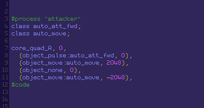
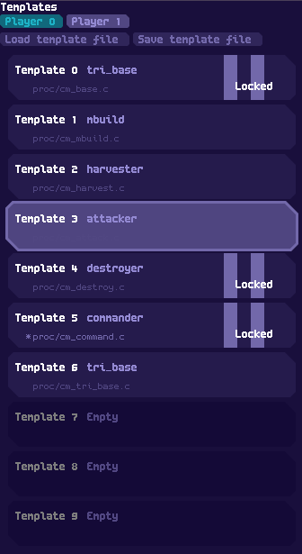
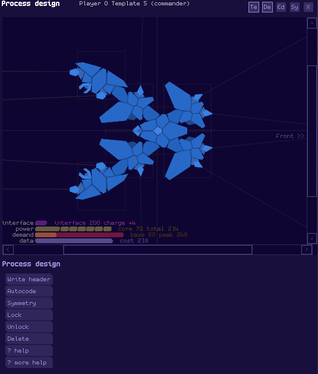
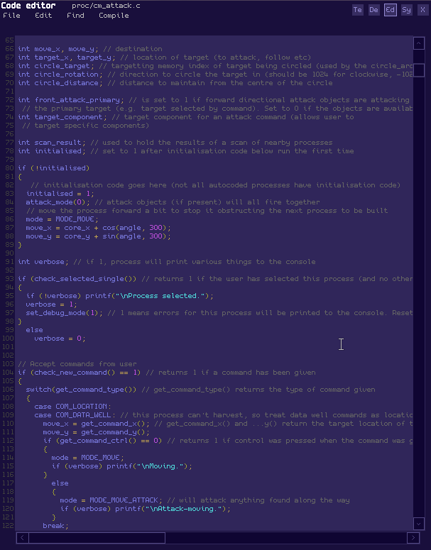
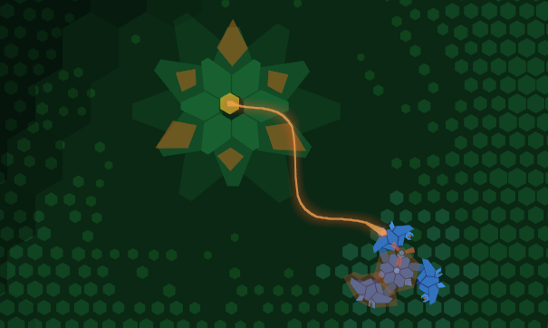
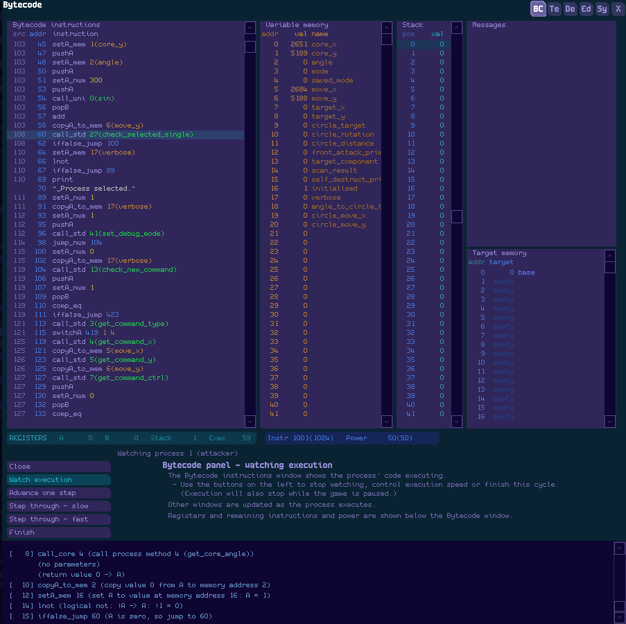

Liberation Circuit
Copyright 2017 Linley Henzell
Version: 1.3
1. Introduction
Liberation Circuit is a game of fighting for control of a computer system
(although it won't teach you anything about how to do this in
the real
world!). It has singleplayer modes and also supports play-by-email
multiplayer. Networked multiplayer is possible in theory and may be implemented sometime
in
the future.
You don't need to read this manual to play the
game - it's mostly a detailed reference for advanced players, so if you
just want to play then start up the game and start playing.
Game
settings (like the size of the
game window, fullscreen, sound volume, keyboard mapping, colourblind settings etc) can be changed by editing
init.txt in the game directory - just follow the instructions in the
init.txt file.
Liberation Circuit is licensed under the GPL v3 (or any
later version), and source
code is available online, probably at https://github.com/linleyh/liberation-circuit.
To build it you will need a C compiler (I use
gcc) with the Allegro 5 library. See the comments in
m_main.c for more information about building the game.
The procedural music generator is based on Batuhan Bozkurt's Otomata.
A note on security
This
game executes user-supplied bytecode inside a simple virtual machine.
I've done my best to make sure everything the bytecode interpreter
does is bounds-checked, heavily supervised and as far away
from system calls as practicable. But I'm not a
professional programmer and I can't guarantee that the virtual
machine is bulletproof when running unknown code by other people. Exercise discretion when
running other people's processes, particularly in bytecode form!
See also the Disclaimer and Limitation clauses of the GPL (in licence.txt in the main game directory).
Contents
2. Basic things
Your task is to escape a hostile computer system by taking control
of the sub-systems along the way. To do this, you will need to
eliminate all hostile processes.
In this world
your will is executed by processes running on the system; processes can
move, sense their surroundings, attack, reproduce and many other
things. In some environments you can control them directly, while in
others they are free to make their own decisions.
2.1 Processes
You can think of processes in two ways: they are the equivalents of
units and structures in Liberation Circuit's real-time strategy game,
and they are also small programs running in your computer's CPU (as
bytecode in a virtual machine).
Each process has a core, which might look like this:
But a core by itself can't do much; it needs objects. Objects can be attached to the core at each of its links:
This
process consists of a core, two move objects (which work like little
rocket engines) and a pulse object to attack other processes with.
The
code to generate this process (which the game can generate for you; you don't need to type it in manually) looks like
this:

As well as the core, a process can have other components attached to the core by link objects, like this:
Or this:
2.2
Templates
A template contains the source code for a process' AI routines and
the structure of the process' components. Builder processes use
templates to build new processes, and a process from template 0 is
automatically
placed for you at the start of each game.
You can open the template panel by clicking on the little "Te" button
near the top right of the screen. The template panel lets you choose which template is open in the designer and editor panels.
Templates
can be unlocked or locked. An unlocked template can be edited or
deleted. A locked template can only be modified in limited ways (you
can't change the process design, although you can recompile the code -
see section 4.3 below on recompiling a locked template). A template is
automatically locked when it is used to place a process in the game; it
can be unlocked again only when no processes built from it remain.
To load a process from
disk into a template, open its source code using the File menu in the editor panel. The
source code will be automatically compiled (and the template locked)
when a new process is built from the template. You can also compile
source code manually.
You
can edit the init.txt file in the main game directory to tell the
game to automatically load files into templates when you start the game (see instructions in init.txt).
2.3 Process designer

You can open the process designer panel by clicking on the little "De" button
near the top right of the screen. The process designer lets you design a process without hand-coding the process definition.
When
you create a new process (by clicking the "New" button that appears on
the lower part of the panel when the current template is empty), only
the core will appear. You can:
- Select the core (by clicking on it), then use the menu below to change the kind of core the process will have.
- Select one of the core's links (the points on the core which things can be connected to), then:
- click on the "New component" button to add a downlinked component to that link;
- click on the "change uplink" button to change the component's uplink to the selected link;
- click on the "Clear" button to remove any object on the link;
- click on any of the other buttons to add an object to the link.
- Select any component (including the core), then select the rotation icon that appears to rotate the component.
- also, hold control to lock the rotation to a limited range of angles.
- Select a component then click "delete" to remove it. (Doesn't work on the core.)
- Click on "Symmetry" to make the process symmetrical around the
horizontal axis (components above the axis will be copied below).
- Click on "Write header" to replace the process header part of the process' source code with what you've designed
- Click on "Autocode" to automatically generate source code for the
process.
- Click on "Lock" to try to compile the
source code and lock the template so it can be used to build processes
(you should probably click "Write header" before doing this, or any
changes made in the designer won't have been written to the source
code). This is done automatically when a process is built from an
unlocked template, so you don't strictly need to do it.
- Click on "Unlock" to try to unlock the template so that it can be
edited. You can only do this if there are no processes build from that
template in the current game.
Designing
a process is a matter of giving it a tactically effective structure,
the right objects for its role in your force and enough power to run
properly, while not making it too expensive.
Some process design considerations:
- A
process' data cost determines its inertia (weight). The more inertia it
has, the slower it moves. More expensive processes also take longer to
complete when built.
- More advanced cores produce more
power, have more links to place objects on, and are more robust (core
integrity determines the integrity of all components). But they are
much heavier and more expensive.
- A process can get
away with being a bit underpowered if it won't need to use all of its
objects at the same time (the example process above has a peak power
use of 248, if all of its objects are operating at once, but a capacity
of only 214).
- A process with spread-out
components rotates more slowly (its moment of inertia is greater)
than a tightly clustered process.
- On the other hand, move objects can generate more torque (turning force) the further they are from the process' centre of mass.
- When a process' core is destroyed, the whole process is lost. Make sure the core is protected!
2.4
Code editor

To open the code editor, click on the little "Ed" button near the top
right of the screen.
The code editor is a basic integrated development
environment for
the game's built-in compiler. You don't have to use it -
you can use another program entirely to edit your source files - but
it has some features that can be useful, like test
compilation, code completion for built-in keywords and a help function (right-click on a keyword for help).
The
code editor always has the source code for the currently selected
template. Use the template panel to change the selected template.
The File, Edit and Find menus contain basic editor functions.
The Compile menu has the following functions:
- Test compile
- This attempts to compile the currently open file. If
successful, the results are discarded.
- Compile
- This attempts to compile the currently open tab, and if
successful updates the design in the design panel.
- Compile+lock
- Does the same as Compile, but if successful also locks the template
so it's ready to be used in the game.
If an unlocked template is used to place a process in the game, it will automatically be compiled and locked.
Some limitations of the
editor:
- Source files can't be longer than 2000 lines;
- Each line of a source file can't be longer than 160
characters.
- Undo/redo is a bit dodgy. Don't rely on it too much.
2.5 Menu interface
 When you first start the game, you are in the start-up screen.
When you first start the game, you are in the start-up screen.
The left side of the screen has a game menu with the following options:
Start
- Start playing the single-player RTS game.
Start (Hard)Like the normal game, but enemies are more plentiful and robust.
Start (Autonomous)- This is like
the standard game but you play in autonomous mode (which means that
you have no direct control over your processes).
Start (Autonomous+Hard)
Autonomous mode and Hard mode at the same time.
- Custom game
- Set up a custom game (including multiplayer).
- Exit
- Exit.
3.
Playing the game
3.1 Story and command mode
The normal story is played in command mode. In
command mode, processes can accept commands from the
user and act on them. The commands accepted are pretty standard RTS commands (they're mostly based on Starcraft).
To
select a process to give commands to, left-click on it. Multiple
processes can be selected by holding the left mouse button to drag a
box-select around them. Shift-clicking adds or removes processes from
the selection. Double-clicking on a process selects all visible
processes of the same type (i.e. built from the same template). There
is a limit on the number of processes you can have selected at the same
time (currently 32).
The commands you can give are:
- Location - right-click somewhere on the screen or map. Most processes interpret this as a command to move to the location.
- Attack
- right-click on an enemy process. The selected process/processes will
attack the target (although some processes can't attack).
- Attack-move
- right-click on a location while holding the control key.
Processes will move, but attack things they find on the way.
- Data well
- right-click on a data well. Harvester processes will try to harvest
data from it (although autocoded harvesters don't require you to click
exactly on the well; anywhere in scanning range of it is fine).
- Friendly
target
- right-click on a friendly process. In most cases this will activate
guard mode and the selected process will move in a circle around the
target. But if the
selected process has a harvest object it will set the target as the
process it returns to after harvesting.
Holding shift while giving commands queues them. Up to 4 commands can be queued for each process.
Builder
processes (processes with build objects) have a separate set of
build commands, with a separate queue - see the buttons that appear on
the left side of the screen when you click on a builder process. Each
button is for a different template; templates for static processes are a different colour.
To
give a build command, click on the button. If you're building a
mobile process, it will be built just in front of the builder. To build
a static process, right-click on a location and then drag the mouse to
indicate the direction the new process should face. Left-click to
cancel.
Build commands are queued automatically; only the
command at the front of the queue will be built. You can re-order
queued commands by dragging them, and delete them by clicking on the X
button.
Holding control while giving a build command
tells the builder to build the same thing repeatedly (every time it
fulfills a command, the command goes to the back of the queue instead
of disappearing).
When
a new process is built by an autocoded static builder process, any commands on the
builder's command queue are copied to the new process. For
example, if you tell a static builder to guard itself, anything it
builds will guard it.
The
keys Z, X, C, V, B, N and M (the bottom row of a QWERTY keyboard; these
can be remapped by editing init.txt) are used for control groups. Set
all selected processes to a control group by pressing ctrl-Z (etc). Add
selected processes to a control group by pressing shift-Z (etc). Select
a control group by pressing Z (etc).
3.2 Autonomous mode
In
autonomous mode, you can't give commands to your processes - they need
to be programmed to make their own decisions. The autocoder isn't much
help here; it can't make up complex AI.
All
of the enemies in the
missions are designed to work in autonomous mode, so if you want
examples of autonomous processes you can look at the source code in the
story directories.
3.3 Multiplayer
Currently, asynchronous multiplayer with up to four players in
autonomous mode is
supported (simultaneous networked command-mode multiplayer may happen
one day).
The
goal of a multiplayer game is to design a set of processes that will
defeat the opponent's processes, without further input from you. Here's
how to set up and play a multiplayer game:
1. Each player (let's call them Alice
and Bob) starts a game (the settings don't matter) and loads
process files into as many templates as needed.
2. Alice and Bob
each save a multi-binary file (using the "save multi-binary" button
at the top of the template panel). This contains the binary code
for all of their templates.
3. Alice and Bob send their multi-binary files to each other, decide that Alice will be player 0 and Bob will be
player 1, and agree on which map code to use (you can make map codes on the Custom Game screen).
4. Alice clicks on "Custom Game" on the main menu, enters the agreed map code, then clicks "Start Game". Bob does the same.
5. Before
clicking on the "Click when ready" button, Alice loads her
multi-binary file into the player 0 templates and Bob's file into
the Player 1 templates (using the "load multi-binary" button on
the template panel). Bob also loads Alice's file into Player 0 and his
file into Player 1.
6. Now they both click "Click when ready", and watch to see who wins!
A custom game with the same starting
conditions (the same binary files and the same map code) *should* unfold in exactly the same way on all computers.
4.
Compiler
Liberation Circuit is in essence a programming game.
The
programming is done in a simple scripting language with syntax
based on C. The quickest way to get started with it
is probably to use the
autocoder to generate code for various different
kinds of process, and look at the results. You could also look at the
source code for the story processes (look in the story directory).
The game's built-in compiler is available from the code editor, and
is also automatically called when an unlocked template is used to place
a process into the game. It is not a very good compiler. It has a range
of limitations
and odd features, some dictated by the environment
but most resulting from the fact that I don't really know how to write
a compiler.
(What I do know about how compilers work I
learned from Serge Zaitsev's CUCU
project (quote: "Never, please, never do it this way!"),
which is the clearest
explanation of simple compiler design that I've found anywhere. See
http://zserge.com/blog/cucu-part1.html.)
Some of the compiler's "special" characteristics are:
- It has only one basic variable type: int, which is a 16-bit
signed
integer. No floats, chars, structs, unions or unsigned. It
does allow arrays of ints, with up to three dimensions.
- Pointers are not supported.
- It doesn't recognise statements used as
expressions. That
means no
a = b++;. You'll have to keep them separate, sorry :(
- Variable scope is always global. There is no block scope.
- Functions are not supported. Everything is just one long shapeless main
function. Instead of functions, you can use BASIC-style gosub/return subroutines! They are almost as good.
- It doesn't give many warnings. Also, some of its error
messages could
be a little more useful.
- It doesn't really optimise anything. Constant folding and other basic optimisations are on my to-do list.
- Octal numbers aren't supported. I hope this will not cause
any great
inconvenience. Hexadecimal is supported, though.
- Binary numbers with the 0b prefix are supported (e.g. 0b11
is 3).
- Programs need to be designed to be executed repeatedly (about 4 times a second).
This has
consequences for variable initialisation: variables retain their
values between executions, so you may need special
initialisation code that you wouldn't usually need in a C program.
- There are limits on compiled code size, although
this is really
a game mechanic rather than a limitation of the compiler. Processes must
fit in 2048 bcode words (each word is one 16-bit instruction).
- There is no dynamic memory allocation.
- There is no linker. Everything that a program needs should
be in the
same .c file.
- There isn't really a preprocessor. No standard C preprocessor directives are supported.
- Things
that would
normally be done with libraries, like complicated
maths operations, are done using special built-in "methods" (like functions).
- Programs have a special "process" definition at the
start, which defines the process' structure in the game. Although you
can edit this manually, it's usually easier to use the designer to
generate it for you.
The programs in the story directories, and programs generated by the autocoder, have plenty of
comments, so you could look at those if you're trying to work out how
to code in this environment.
Also, you can right-click on a keyword in the editor panel for details of what it does.
4.1 Keywords recognised by the compiler
The compiler recognises some, but not all, basic C keywords, and has a few special ones of its own.
These should work as expected:
if/else
do
while
switch/case/default
break
continue
goto
enum
Some others work, but maybe not quite as expected, and there are a few special keywords:
int
This is the only
data type currently supported. It's a signed 16-bit integer, from
-32768 to +32767. Arrays of ints, with up to 3 dimensions, are
supported.
Each process has its own separate memory (large enough
to hold up to 512 ints), and all variables are initialised to 0 when a
process is created then retain their value between execution cycles.
This means that you can't combine variable declarations with
assignments. So you can't do this:
int a = 1; // doesn't work
If you need to initialise variables, use special initialisation code that only runs once. For example:
int initialised; // starts as zero
int special_number;
if (!initialised)
{
special_number = 100;
initialised = 1; // makes sure that this code will only run once, the first time the process runs.
}
for
Because statements and expressions aren't interchangeable, for
statements must always be in the form for (<statement>;
<expression>; <statement>). The first statement can't be a combined variable declaration and initialisation.
This shouldn't be a problem for basic uses like for (i = 0; i <
10; i++) {...}.
printf
Prints formatted text to the console on the bottom left of the game screen. For example:
printf("\n Counter is equal to %i.", counter); // assumes counter has been declared as an int.
The only format specifier currently accepted is %i. Line breaks (\n) can be used too.
bubblef
Like
printf, but prints up to 40 characters of formatted text to a speech
bubble that appears next to the process for a few seconds.
exit
Since there's no stdlib, there's no exit() function. The exit keyword (just exit; without brackets) is turned directly into a stop instruction, which ends execution.
terminate
Self-destruct.
gosub/return
Functions
are not supported, but subroutines are! Gosub works just like goto,
except that when a return is found the program jumps back to the next
statement after the gosub. For example:
gosub sub_routine_code;
<next statement 1>
gosub sub_routine_code;
<next statement 2>
<other code>
exit;
sub_routine_code:
<subroutine code goes here>
return; // jumps back to the next statement after the gosub
Gosubs can be nested, within reason.
#process "name"
<process header goes here>
#code
These
should appear only once, at the start of a program. #process is at the
start of the header setting out the structure of the process, and #code
is at the start of the code. "name" is the name that will be given to
the process' template.
The process header is usually generated from the designer, but you can edit it manually if you want to.
class
This
keyword is used in the process header to designate object classes (and
can also be used to call classes of objects by class index). See the
object method section below for more about classes.
Some other keywords aren't supported:
variable types that are
not int
static
auto
const
typedef
sizeof
restrict
extern
register
volatile
Also, the ternary ? operator isn't supported. Most other operators
should be, and I *think* operator precedence should work as expected,
except that bitwise operators bind more closely than logical and
comparison operators (as they should!).
4.2 Recompiling a locked template
Although
the process design of a locked template can't be changed, you can
recompile the code to change the behaviour of processes created from
it. This affects all processes based on the template, including any
already created.
There are a few things to be aware of when recompiling a locked template:
- The
process header should be left alone. Any changes to the
component/object design will just be ignored, but changes in class
declarations or assignments can cause problems.
- You can rename the process by changing the #process line, though.
- Any
existing processes based on the template will retain the contents of
their
variable memory, so any new variable declarations should come after
all of the existing variable declarations to avoid the processes
getting confused about the addresses of existing variables
(variables are stored in order of declaration).
- Also,
existing variable declarations shouldn't be removed or re-ordered, and
existing array size should not be changed.
- Existing processes also retain their targetting memory.
4.3 Methods
Methods are built-in functions, a bit like C library functions,
that let a process interact with the world and perform complex operations. There
are a few different kinds of methods:
- Standard methods are the most
basic kind, and there are lots of them. They do things like perform
special calculations, scan a process' surroundings and receive commands
from the user.
- Object methods control a process' objects, and
allow a process to do things like move (using move objects) or attack
other processes (using attacking objects like pulse objects). They can
be called on specific objects, but they are usually called on classes
of objects. Some objects which don't need to be controlled individually
are used with standard methods instead of object methods.
- Process methods return useful information about a process, like its location,
speed and damage level. A process can call them on itself, and also on
other processes that it has targetted.
- Component methods are like process methods, but are called on individual components of a process.
5.
Standard methods
5.1 Scanning and targetting
Scanning methods allow a process to detect other nearby processes.
Scans have a range of about 900 pixels (at maximum zoom level) in a
rough circle (actually an octagon) around the process. The 'fog of war'
clearing effect around a process is about the size and shape of its
scanning area.
The first time a scanning
method is called during a cycle is quite expensive,
because the process is building a list of all targets that are in range.
Each subsequent call is cheaper, because the process just queries the
list (this is all done implicitly).
Each
process has a special targetting memory which can store up to 64
targets. Once a target has been stored in targetting memory, process
methods can be called on it when it is visible (within scanning range of any
friendly process).
scan_for_threat(x_offset, y_offset, target_index)
Simple scan method that finds the nearest enemy core and saves it to targetting memory at index target_index.
x_offset
and y_offset let you choose the point from which proximity is
calculated (for the purpose of working out which enemy is
nearest). They can be any distance away from the core, although only
targets actually within scanning range of the core itself will be
detected.
target_index is the address in targetting memory that the target should be stored in. Set this to -1 to discard the target.
Returns 1 if a target was found, 0 if not.
Example:
target_found = scan_for_threat(cos(get_core_angle(), 400), sin(get_core_angle(), 400), 1);
//
searches for the enemy targest nearest to a point 400 pixels in front
of the core, and saves it in targetting memory address 1. Returns 1 if a target was found.
scan_single(x_offset, y_offset, target_index, friendly, components_min, components_max, scan_bitfield)
A more complex scan method that allows more filtering of targets.
x_offset, y_offset and target_index work the same way as for scan_for_threat().
friendly should be:
0 to accept only enemy targets;
1 to accept both friendly targets and enemy targets;
2 to accept only friendly targets.
components_min
and components_max let you scan for only small or large processes. A
process with fewer components (including the core) than components_min
or more than components_max is ignored. To detect processes of any size
set components_min to 0 and components_max to any very high value (100
will do).
scan_bitfield
is a bitfield that allows you to set which targets will be detected in
more detail. If one of the bits is set, any target whose signature matches that
bit will be accepted. If multiple bits are set, targets' signatures must match all of the bits to be accepted. The bits are:
0b1 - process is static
0b10 - process is mobile
0b100 - process has at least one build object
0b1000 - at least one allocate object
0b10000 - at least one harvest object
0b100000 - at least one pulse object
0b1000000 - at least one spike object
0b10000000 - at least one stream object
0b100000000 - at least one burst object
0b1000000000 - at least one interface object
0b10000000000 - at least one ultra object
0b100000000000 - at least one slice object
0b1000000000000 - at least one repair other object
For
example, 0b1100 has the bits for build objects and allocate objects
set, so it will detect any process that has both a build object and an
allocate object (objects on destroyed components are ignored) and
ignore other processes. To detect any process, use 0.
Returns 1 if a target found, 0 otherwise.
Example:
target_found = scan_single(cos(get_core_angle(), 400), // x_offset
sin(get_core_angle(), 400), // y_offset
TARGET_MAIN, //
an enum indicating an address in targetting memory
0, // only detect enemy processes
0, // components_min - 0 means no
minimum
12, // components_max - ignores processes with more
than 12 components
0b100100000); // scan_bitfield -
processes with both a pulse and burst object
scan_multi(x_offset, y_offset, target_index, number_of_targets, friendly, components_min, components_max, scan_bitfield)
Just
like scan_single, except the number_of_targets parameter allows
scanning for up to 6 targets. The targets will be stored in successive addresses in targetting
memory starting from target_index, sorted by distance from the centre
of the scan.
Returns the number of targets found.
target_clear(target_index)
Clears targetting memory at address target_index.
Returns 1 on success, 0 on error (e.g. if target_index is out of bounds).
target_compare(target_index_1, target_index_2)
Compares the targets at targetting memory address target_index_1 and target_index_2.
If they are the same process, returns 1. Returns 0 otherwise.
target_copy(target_index_dest, target_index_source)
Copies
the target at target_index_source to target_index_dest. If
target_index_source is empty, target_index_dest will be cleared too.
Returns 1 on success, 0 on failure.
target_destroyed(target_index)Checks whether the target has recently been destroyed.
If the target is (or was) friendly, returns 1 if the target was destroyed within about 200 ticks before present.
If the target is (was) an enemy, returns 1 if:
- the target was destroyed within about 200 ticks before present; and
- the location at which the target was destroyed is currently visible (to any friendly process).
Returns 0 otherwise.
check_point(x_offset, y_offset, target_index)Checks
for a process at a particular point; if a process is there (i.e. if any
part of it overlaps the point) the process is stored in targetting
memory address target_index.
x_offset
and y_offset are offsets from the calling core, and must be within scanning
range of the calling core. However, this method does not execute a scan.
Returns 1 if a process is detected, 0 if not, -1 on error.
check_xy_visible(x_point, y_point)
Checks
whether a particular point is visible (i.e. within scanning range of
any friendly process). x/y_point are absolute values.
Returns 1 if the point is visible, 0 otherwise.
5.2 Power management and instructions
A process generates a certain amount of power each cycle to use its objects and do various other
things. The exact amount is
determined by the core type and the number of components.
Power
is used by object method calls, and some objects have an ongoing
cost which is applied just before each cycle starts. For example, an
active interface object uses 10 power at the start of each cycle,
and a pulse object uses 20 power when called to fire and also uses 20
power at the start of a cycle if it is still recycling from being fired.
If
the process runs out of power partway through executing, subsequent
object method calls may fail. Failures like this show up as a red bar
on top of the power use bar in the graph in the process data display.
A
process also has a certain number of instructions it can perform each
cycle; the exact amount depends on the core type. Instructions are used
by program logic and method calls. For example, assigning a value to a
variable costs a few instructions, while performing a scan costs a lot
of instructions. If the process runs out of instructions partway
through execution, it will stop.
get_power_capacity()
Returns the power generation capacity of the process.
get_power_used()
Returns the amount of power used so far this cycle.
get_power_left()
Returns the amount of power left this cycle.
get_instructions_left()
Returns the number of instructions left this cycle.
5.3 Contact and damage
These methods are like a sense of touch, and return information about collisions and damage taken since the previous cycle.
check_contact(target_index)
Returns
1 if the process has collided with another process. If it
has, saves the other process in targetting memory at the address
indicated by target_index (set target_index to -1 if you don't want to
save the target).
If the process collided with multiple other processes during the previous cycle, the most recent one is saved.
get_damage()
Returns the amount of damage taken by the entire process since the previous cycle (including any damage taken by its interface).
More information about how much integrity the process has (or how much damage it's taken) is available using
process methods like get_total_integrity().
get_damage_source(target_index)
If
the process has taken damage (including to its interface) since the
previous cycle, saves the source of that damage (e.g. a process that
fired a pulse at it) to targetting memory at target_index then returns 1.
Returns 0 if no damage taken.
If multiple processes have caused damage, the most recent one to do so is saved.
5.4 Data
These
methods allow a process to look for and examine nearby data wells (the
source of the data that's used to build new processes).
Some of these methods (the ones that involve interaction with data wells) can only be used by a process which has at least
one harvest or build object (otherwise they will just fail and return 0 or
-1).
search_for_well()
Searches for a well within scan range of the process. Returns 1 if a well is found, 0 otherwise.
Requires a harvest or build object.
get_well_x()get_well_y()
If
a well is within scan range, returns its x or y coordinate (as an
absolute, not an offset from the process). Or returns -1 if no well is
nearby.
If more than one well is within scan range, the location
of the closest one to the process is returned (the same is true of all
of the following data well methods as well).
Requires a harvest or build object.
get_well_data()
Returns
the amount of data currently available (not in reserves) in the nearest well, or -1 if no well is within range.
Requires a harvest or build object.
get_data_stored()
Returns the total amount of data stored in the process' data storage objects.
get_data_capacity()
Returns the maximum amount of data the process can store in its storage objects.
get_available_data()
Returns
the amount of data available to the player for building new processes
(this is the amount of allocated data shown in the information box at
the top right of the display; it doesn't include unallocated data in
storage objects on your processes).
5.5 Messages and broadcasting
These
methods allow a process to communicate with other friendly processes by sending messages consisting of up to 8 ints.
To send a message, a process either:
- uses a transmit method to send the message to a friendly process in targetting memory; or
- uses a broadcast method to send the message to all friendly processes, or all friendly processes within a specified range.
Broadcast
methods send the message on a particular channel, from 0 to 7. A
process only receives a broadcast if it is listening to the channel
(see the listen_channel method).
Transmit methods do not use
channels, and a process always receives a message transmitted to it
specifically (unless its message buffer is full).
To check and read its messages, a process:
1. calls next_message() to start reading the first message
2. if next_message() returned 1, calls read_message() to read the first value sent in the first message
3. then calls read_message() again to read the second, third etc. value in the message.
4. calls next_message() again to go to the next message. If next_message() returns 0, there are no more messages.
Example:
while(next_message()) // starts reading the first message, or the next message on the queue, and returns 1 if there is one
{
switch(read_message()) // reads the first value in the message contents
{
case MESSAGE_MOVE_TO:
move_x = read_message(); // reads the second value
move_y = read_message(); // reads the third value
continue;
case MESSAGE_ATTACK_TARGET:
attack_x = read_message(); // reads the second value
attack_y = read_message(); // reads the third value
get_message_target(TARGET_ATTACK); // saves the target that was attached to the message
continue;
}
}
A
process' message received buffer can hold up to 8 messages received
since the previous cycle, and is cleared at the end of each cycle.
Transmissions and broadcasts use the same buffer.
transmit(target_index, priority, <message_value_0>, <message_value_1>, ...)
Sends
a message to the process in targetting memory entry target_index. The
target must be friendly, and can be any distance from the transmitter.
priority
is 0 or 1. The difference is that if the target already has 8
messages in its buffer, a priority 1 message will displace and
overwrite a priority 0 message.
The message_values are the
contents of the message. There can be up to 8 of them; any that are not
specified in the call are written as 0.
Example:
transmit(0, 1, 100, 2); // sends a message to target 0 with priority 1. // The message is 100, then 2, then six zeroes.
broadcast(range, channel, priority, <message_value_0>, <message_value_1>, ...)Like transmit, but sends the message to all friendly processes that are
within range and are listening to the channel.
range is in pixels and can be as
high as needed. Set range to -1 for unlimited range.
channel
should be 0 to 7; the message will be received only by processes that
have called listen_channel to listen to the correct channel.
priority is 0 or 1.
transmit_target(target_of_transmission, priority, target_to_transmit, <message_value_0>, <message_value_1>, ...)
Like
transmit, except an entry in targetting memory is attached to the
transmission. The process that receives the transmission can copy the
targetted process to its own targetting memory using the
get_message_target() method.
This can be used, for example, by
processes that need to coordinate their attacks. If one process
transmits an enemy target to other friendly processes, they can then
target it directly as long as it is visible to any friendly process.
target_of_transmission is the friendly process to which the transmission is being made.
priority
is 0 or 1.
target_to_transmit is the index of the target in the transmitting process' targetting memory.
The message_values are the
same as for transmit(), and there can also be up to 8 of them.
Example:
transmit_target(TARGET_FRIENDLY, 1, TARGET_ENEMY, 100, 2);
// sends a message to target TARGET_FRIENDLY with priority 1.
// the message is 100, then 2, then six zeroes.
// target TARGET_FRIENDLY will also receive targetting information about TARGET_ENEMY.
broadcast_target(range, channel, priority, target_to_broadcast, <message_value_0>, <message_value_1>, ...)Like broadcast(), but sends a target in the same way as transmit_target().
check_messages()
Returns
the number of unread messages received by the process since the last time it
executed.
Doesn't include the current message set by next_message() (if any), or any messages discarded by next_message.
If
there's more than one message, the messages will be in a queue in
order of time received (although a priority 1 message that displaces a
priority 0 message may be out of order).
read_message()
Returns
the contents of the current message. Calling it more
than once returns the second, third, etc value. Returns 0 if no
message, or if the end of the message has been reached.
Requires a call to next_message(), to set the current message.
next_message()
The
first time next_message() is called in a cycle, it sets the first
message received since the previous cycle to be the current message.
This allows the message to be read.
Subsequent calls discard the current message and move to the next one.
Returns 1 on success (if there is a message to read), or 0 if there are no more messages.
get_message_type()
Returns
the type of the current message.
Returns
1 for a
message sent by transmit(), 2 for a message sent by transmit_target(),
3 for a broadcast() message and 4 if the message was sent by
broadcast_target().
Returns 0 if there is no
message on the queue.
Requires a call to next_message(), to set the current message.
get_message_channel()
Returns the channel the current message was sent on.
Returns 0 if the message was transmitted directly. Returns -1 if there is no current message.
Requires a call to next_message(), to set the current message.
get_message_priority()
Returns the priority the current message was sent on. Returns -1 if there is no current message.
Requires a call to next_message(), to set the current message.
get_message_source(target_index)
Saves the process that sent the current message to targetting memory at address target_index.
Requires a call to next_message(), to set the current message.
get_message_target(target_index)
If
the current message was sent by transmit_target() or broadcast_target(), this
saves the target attached to the message to targetting
memory, at address target_index.
Returns 1 on success, 0 if no target was attached or -1 on error.
Note that this method returns 1 if a target was attached, even if the targetted process no longer exists.
Requires a call to next_message(), to set the current message.
get_message_x()get_message_y()
Returns
the absolute x/y position of the process that sent the current message,
at the time the message was sent. Returns -1 if there is no
current message.
Requires a call to next_message(), to set the current message.
listen_channel(channel)
Makes
the process listen to a particular channel from 0 to 7. The process
will listen to the channel permanently (or until it is told to ignore
the channel). A process can listen to as many channels as needed.
All channels default to being ignored, so if you want a
process to receive messages it must use this method.
ignore_channel(channel)ignore_all_channels()
Reverses
listen_channel by making the process ignore a particular channel, or
all channels. The process can re-listen by calling listen_channel.
5.6 Building new processes
Standard
methods (rather than object methods) are used to operate build objects,
because a single build call activates all of a process' build objects
at once (multiple build objects reduce the recycle period after which
the process can build something again).
check_build_range(x, y)
A
build object can build a new process anywhere within its scan range (only the
core of the new process must be within range). This method checks whether the
absolute location x,y is currently within range, and returns 1 if it is
or 0 if not.
build_process(template_index, x_offset, y_offset, angle, target_index)
Tries
to build a new process from template template_index. If the template is
not locked, the compiler will automatically try to compile and lock it.
The
new process will be built at a location indicated by x_offset/y_offset
(which are offsets from the builder process' core).
There
must be space
at that location for the new process to be placed without overlapping
another process that it could collide with. If there is not, the build call will fail but any
mobile friendly process at the target location will be nudged away.
If
the new process is static, it must be placed at least 450 pixels
away from a data well (this is indicated on the display when you are
placing a static process).
The new process will be pointing in the direction indicated by angle.
The builder can save the new process to its targetting memory at target_index (set target_index to -1 if this isn't needed).
(The new process will automatically have the builder process at address 0 of its targetting memory.)
This
method has the following return values (errors will generally print an
error message if the builder is selected, or if debug mode is on):
1 - success
0 - cannot build - process has no build objects
-1 - template empty
-2 - invalid template index
-3 - (not currently used)
-4 - the template couldn't be locked (e.g. because of a compiler error)
-5 - player already has too many cores
-6 - player already has too many components
-7 - process would collide with an existing process
-8 - build objects are recycling
-9 - a component of the new process would be outside the map
-10 - build location out of range of builder
-11 - not enough data to build
-12 - tried to build a static process too close to a data well
-13 - builder doesn't have enough power to be able to build
build_repeat(target_index)
Tries
to repeat the process' most recent attempt at building something. For
example, if a process tries to build something but there isn't enough
data, in the next cycle it can call build_repeat to try again without
needing to repeat the build_process parameters.
Otherwise, works just like build_process().
get_template_cost(template_index)
Returns the data cost of building from a template.
5.7 Interface
Since
a process' interface is usually shared among several
components, the methods used to control the interface are standard
methods
rather than object methods.
charge_interface(charge_amount)
Charges
the process' interface.
charge_amount
is the number of interface objects to use to charge the interface. Each
object costs 10 power and charges the interface by an amount that
depends on the core type.
A process can only call this (or charge_interface_max()) once per cycle. Subsequent calls do nothing.
Returns the increase in interface strength.
charge_interface_max()
Like
charge_interface, but
without a set charge_amount; it just tries to put as much power as
possible into the interface. Calling it is the equivalent of calling
charge_interface with a very high charge_amount, but saves a few
instructions.
set_interface_general(setting)
Call
with a zero value to lower the interface for the entire process. While
lowered the interface does not protect the process and interface
objects do not consume power, but the interface retains its strength
and can be charged.
Call with 1 or any other non-zero value to
raise the interface for the entire process, unless it's broken.
The
default state of an interface is raised, and while raised it will come
back as soon as possible after being broken,
so there's no reason to explicitly raise a process' interface
unless it's previously been explicitly lowered by this method.
5.8 Repairing and restoring
Like
the standard interface methods, the standard repair methods use all
repair objects at once (it's not possible to call them separately).
Having
multiple repair objects increases the amount of repairing that can be
done each cycle, and reduces the recycle period after restoring a
destroyed component. They also increase the power cost.
Having
a repair_other object allows the
process to repair other processes within scan range. A single
repair_other object effectively turns all other repair objects
into repair_other objects as well, and a repair_other object also functions as
an ordinary
repair object.
repair_self()
Looks
for a damaged component of the process and, if found, repairs it.
Searches in the order the components appear in the process header in
the process' source code (so the core is always first).
Each
repair object repairs 1 integrity per cycle, and the power cost is 16 per point
repaired.
Returns the amount repaired, or -1 on error.
restore_self()Looks
for a destroyed component and, if found, tries to restore it. Searches
in the same order as repair_self(). Will not work on a component that
would collide with another process if restored.
Costs 24 power,
and has a recycle time based on the data cost of the component and any
objects on it (although there is no actual data cost for restoring a
component). While recycling, the object can still be used to repair.
The
new component is restored with only partial integrity, and can easily
be destroyed again if not repaired or protected by an interface.
Returns 1 if a component was restored, 0 otherwise.
repair_other(target_index)restore_other(target_index) Like
repair_self() or restore_self(), but repairs or restores the process in
targetting memory indicated by target_index. The target must be within
scan range.
Requires at least one repair_other object.
repair_other() returns the amount repaired, or -1 on error.
restore_other() returns 1 on success, 0 on failure (if nothing was restored), -1 on error.
repair_scan(x_offset, y_offset)restore_scan(x_offset, y_offset)
These methods scan
for a friendly process with a damaged or destroyed component, and
try to repair or restore it. The closest suitable target to the
position indicated by x_offset,y_offset (the offsets are from the repairing process' core) will be affected.
These methods perform a scan if the process has not already scanned this cycle.
Each requires at least one repair_other object.
repair_scan() returns the amount repaired, or -1 on error.
restore_scan() returns 1 on success, 0 on failure, -1 on error.
5.9 Selection
These only work in command mode, and return information about whether the user has selected the process (by clicking on it).
check_selected()
Returns 1 if the process is selected by the user, 0 if not.
check_selected_single()
Returns 1 if the process is selected by the user and no other process is selected by the user, 0 otherwise.
5.10 Commands
These
methods only work in command mode, and allow the process to read
commands (move, attack etc.) given by the user using mouse or keyboard controls.
Each
process has a queue that holds up to 4 commands (the user can queue
commands by pressing shift). The command at the front of the queue is
available for reading.
Build commands are dealt with separately (see standard methods: build commands below).
check_new_command()
Returns
1 if the user has just, since the previous cycle, given a new
command to the process (unless the new command went to the back of the queue).
Also
returns 1 if the process has called clear_command() to clear the
current command, and there is another command on the queue.
Returns 0 if there's no new command.
get_commands()
Returns the number of commands in the queue.
get_command_type()
Returns the type of the command at the front of the queue.
Possible values are:
0 - no command
1 - location (user right-clicked on a location on the main display or the map; probably means a move command)
2 - target (user right-clicked on an enemy process; probably means an attack command)
3 - friend (user right-clicked on a friendly process)
4 - data well (user right-clicked on a data well)
The source code for an autocoded process should contain an enum declaration setting out all of these.
get_command_x()get_command_y()
These
return the location of the command at the front of the queue. If the
target is a friendly process, returns the current location of the
process.
If the target is an enemy process that is within scan range of any friendly process, returns its location.
Return
-1 if no command, or if the target is an enemy process that is out of
range, or if the target no longer exists.
get_command_target(target_index)
Saves the target of the command at the front of the queue to targetting memory at the address indicated by target_index.
Only works if the command type is 2 (target) or 3 (friend).
Returns 1 on success, 0 on failure.
get_command_target_component()
If
the current command has a target process, returns the index of the
component that was targetted (or 0 if that component doesn't exist).
The result can, if needed, be fed into targetting methods (some of
which allow a target component to be designated).
Only works if the command type is 2 (target) or 3 (friend).
Returns -1 on failure.
get_command_ctrl()
Returns 1 if control was pressed when the command at the front of the queue was given. Otherwise, returns 0.
clear_command()
Clears
the command at the front of the queue. If another command is waiting on
the queue, it moves to the front of the queue. The check_new_command()
method can be used to check whether there is another command waiting.
Returns 1.
clear_all_commands()
Clears the whole command queue for this process.
Returns 1.
copy_commands(target_index)
Copies all commands in the process' command buffer (not including build commands) to a friendly target in its targetting memory.
The
main use for this method is to allow the user to give movement
commands to
a static builder process so that the builder can copy them to any
processes it builds (autocoded static builder processes do this).
5.11 Build commands
Processes
with build objects have access to the build queue (when a
builder process is selected, the queue is displayed on the left of the
display, above the buttons that allow build commands to be given). The
build queue lets you coordinate building among all of your builders.
As
with normal commands, build commands are queued by pressing shift. You
can also request a repeat build by pressing control - when the
process has been built, it will go to the back of the queue to be built
again. A + sign on the queue button represents a repeat build command.
Queue buttons can be mouse-dragged to re-order them, and clicking on the X button deletes a queued command.
You can also ignore the build queue and just use the build_process() method instead.
check_build_queue()
Returns the number of build commands for this process on the build queue. 0 means there are none.
check_build_queue_front()
Returns 1 if a build command for this process is at the front of the build queue. Returns 0 otherwise.
build_from_queue(target_index)
Tries
to follow the build command at the front of the queue - the source
template, location, angle etc are all taken from the command.
The command must have been given to the calling process (or added to the queue by the calling process).
Returns 0 if the build command at the front of the queue is not for this process, or if there are no commands on the queue.
Otherwise, returns
the same codes as the build_process() method.
If the new process is successfully built, it is stored in targetting memory at address target_index.
add_to_build_queue(template_index, build_x, build_y, angle, back_or_front, repeat)
Adds a build command for the calling process to the back or front of the build queue.
When
the command reaches the front, other builders will wait until it has
been either executed (with build_from_queue()) or cleared (with
cancel_build_queue()). If the calling process is destroyed, the command
will disappear too.
template_index is the template to build.
build_x, build_y are the (absolute) coordinates of the new process.
angle is the angle the new process will be facing.
back_or_front: if 0, the command will go to the back of the queue. Otherwise, it will go on the front.
repeat: if 0, the build command will not repeat. Otherwise, it will (it will be sent to the back of the queue when built)
Returns 1 if the command was successfully added, -1 on error, 0 if the build queue is full (it can hold up to 12 commands).
This method does not
confirm that the target location is within range and collision free
(although it does confirm that the location is not off the map, and
will return -1 if it is).
build_queue_get_template()build_queue_get_x()
build_queue_get_y()
build_queue_get_angle()
Finds
the first command for this process on the queue and returns information
about it. The command may not necessarily be at the front of the queue
as a whole.
Returns -1 on error.
cancel_build_queue()
Removes all build commands for the calling process from the queue.
give_command(target_index, command_type, x, y, command_target, component, queued, control)
Issues a command to a friendly process, as if the player had given the command. Works in both command mode and autonomous mode.
target_index is the index of the command recipient in targetting memory.
command_type is one of the following:
0 (COM_NONE) no command
1 (COM_LOCATION) usually a movement command. command_target and component are ignored.
2 (COM_TARGET) gives command as if user clicked on an enemy process.
3 (COM_FRIEND) gives command as if user clicked on a friendly process.
4 (COM_DATA_WELL) gives command as if user clicked on a data well.
x, y are the location of the command.
command_target
is an index in the command-giver's targetting memory, indicating the
target of the command (e.g. for COM_TARGET this is the enemy process to
attack). Set to -1 if no target.
component is the component of the target of the command to attack etc.
queued: set to 1 if the command should go the end of the target's queue. Set to 0 if it should reset the target's queue.
control: if 1, gives the command as if the user were pressing control.
Returns 1 if the command was received, 0 otherwise (including if the command is ignored because the target's queue is full).
give_build_command(target_index, template, x, y, angle, back_or_front, repeat, queued)
Issues
a build command to a friendly process, as if the player had given the
command. Works in both command mode and autonomous mode.
target_index is the index of the command recipient in targetting memory.
template is the template to build.
x, y are the location to build at.
angle is the angle of the process to be built.
back_or_front: set to 0 to put the command at the back of the build queue. Set to 1 for the front.
repeat: set to 1 for a repeat-build command.
queued: if 0, all build commands on the build queue for the recipient (but not any other process) will be cancelled.
Returns 1 if the command was received, 0 on failure, -1 on error.
5.12 Mathematics
Your processes will probably need basic trigonometry to get around their 2-dimensional world. Since processes can only
use integer values, the maths methods use a 0-8192 integer angle
format where 0 is right, 2048 is down, 4096 is left and 6144 is up.
Values outside this range wrap around (so 8300 is the same as 108, and -2048 is the same as 6144).
sin(angle, multiplier)cos(angle, multiplier)
Returns
the sine or cosine of angle, multiplied by the multiplier (the
multiplier is needed because the return value would otherwise be a
fraction that would just round to 0, 1 or -1).
The main use of these methods is to
get the y and x components of a vector of (multiplier) length pointing
in (angle) direction. For example:
int point_x, point_y, core_angle;core_angle = get_core_angle(); // this is the angle the process is pointing inpoint_x = get_core_x() + cos(core_angle, 400);point_y = get_core_y() + sin(core_angle, 400); // point_x,point_y is now a point 400 pixels in front of the process
atan2(y_component, x_component)Returns
the arctangent of y_component/x_component, in integer angle format.
This is an expensive operation, with an overhead of 16
instructions.
Note
the order of the y and x components, which is different from most other
methods but is consistent with the C atan2 function.
The main use of this method is to work out the angle between two points. For example:
int target_x, target_y, target_direction;int core_x, core_y;core_x = get_core_x();core_y = get_core_y();target_x = process[1].get_core_x();target_y = process[1].get_core_y();target_direction = atan2(target_y - core_y, target_x - core_x); // target_direction now holds the angle from the core of this process // to the core of the process in targetting memory address 1.
Although
atan2 is very useful, many of the object methods that deal with
movement and targetting call it implicitly, so you may not need to
actually use it very much. The target_angle() process method also often replaces the need for atan2.
hypot(y_component, x_component)
Returns
the hypotenuse of y_component,x_component (that is, the square root of
(y_component*y_component) + (x_component*x_component)). Use this for relatively
precise calculations of distance (it uses an integer-based approximation of sqrt). Like atan2 it has an overhead of 16
instructions.
distance_xy(x_component, y_component)
Returns the
distance from (0,0) to (x_component,y_component). Uses an octagonal
distance algorithm that should be accurate enough for most purposes
(and is much cheaper than hypot).
distance_from_xy(x_target, y_target)
Returns the
distance between the process and the
location at coordinates (x_target, y_target). Uses the same
distance algorithm as distance_xy.
distance_from_xy_less(x_target, y_target, distance)distance_from_xy_more(x_target, y_target, distance)
Returns
1 if the distance between the process and the coordinates (x_target,
y_target) is less (or more) than distance, 0 otherwise. Uses the same
distance algorithm as distance_xy.
abs(number)
Returns the absolute value of number.
arc_length(angle_1, angle_2)
Returns
the length (in absolute integer angle units) of the shortest arc between angle_1
and angle_2. Should deal correctly with arcs that wrap around 0 or 8192. The
order of the parameters doesn't matter.
One use for this method is to work out whether a process is pointing in more or less the right direction, e.g.:
if (arc_length(core_angle, angle_to_target) < 600) // arc_length() always returns a positive number (or 0){ // do something}
angle_difference(angle_1, angle_2)Like
arc_length, but returns the signed length of the shortest arc starting
at angle_1 and ending at angle_2. Unlike arc_length, the order of the
parameters matters. For example:
int a;a = arc_length(1000, 700); // a = 300a = angle_difference(1000, 700); // a = -300a = angle_difference(700, 1000); // a = 300
random(maximum)Returns a random number between 0 and (maximum - 1). Returns 0 if maximum is 0 or negative.
The
random number generator
gets its entropy from a variety of sources, but should always
produce the same series of numbers across multiple games with identical
starting conditions (so the use of this method doesn't prevent
multiplayer games unfolding in exactly the same way when run on
different computers. I hope). However, in story mode your opponent's
random number generator will produce different results in different
games.
5.13 Miscellaneous
attack_mode(setting)
Controls
the way classes of attacking objects will fire when called as a class.
When attack mode is set it remains set (across cycles) until this
method is used to change it again. Applies to all classes.
Settings can be:
0 - all objects will fire when called, if ready.
1
- only the first object that is ready to fire will fire. Remaining
objects will hold fire (but will continue to aim at the target if they
can).
2 - like 1, but two objects will fire.
3 - three will fire.
0 is the default. Returns 1.
get_process_count()
Returns the number of processes the player controlling this process has.
get_processes_max()
Returns the maximum number of processes the player controlling this process can have.
get_processes_unused()
Returns the number of processes the player controlling this process can build.
get_component_count()
get_components_max()
get_components_unused()
Like the previous methods about numbers of processes, but for components.
world_x()world_y()
Return the size of the entire map, in pixels. Includes a buffer of about 255 pixels on each edge, which processes cannot enter.
set_debug_mode(setting)
Sets debug mode on (if setting = 1) or off (if setting = 0) until the end of the current process' execution.
Debug
mode currently just prints some error messages to the console, if
certain kinds of errors are encountered (for example, it will print the
results of a failed build method call). Autocoded processes set it to 1
if they are the only selected process.
You can also set debug mode on for all processes by pressing F1.
special_AI(value1, value2)
Used for AI chatter in story mode. Doesn't do anything else.
6. Process and component methods
Process and component methods give a process useful information about itself, like its location and levels of damage.
Unlike
standard methods, a process can use the process
keyword to call them on
other processes as well. The other process must be in targetting memory
and must be within scan range of a friendly process (not necessarily
the process calling the method).
For example, here is how to call the get_core_x() method, which returns the x coordinate of the location of a process' core:
int x;
x = get_core_x(); // returns the x coordinate of the calling process' core
x = process[1].get_core_x(); // returns the x coordinate of the process
// in targetting memory address 1
Component methods use an additional component reference to get
information about a specific component of a process. The automatically
generated #process header of a process should have comments indicating
the numbering of the process' components.
int x;
x = component[1].get_component_x(); // returns the x coordinate of component 1 of the process
x = process[1].component[2].get_component_x(); // returns the x coordinate of component 2 of
// the process in targetting memory address 1
If the target is not visible or does not exist, a process or component
method returns 0. The standard method target_destroyed() can
be used to check whether a process has been destroyed.
6.1 Process methods
visible()
Returns 1 if the target process is currently visible, 0 if the target is invisible or does not exist (or on error).
Friendly targets are always visible. Enemy targets are visible if they are within scanning range of any friendly process.
If a target is visible, other process methods can be called on it.
get_core_x()get_core_y()
Returns the x/y coordinates of the centre of the process core.
If
you look at a process in the design panel, the centre of the core is
exactly in the middle of the window (where the vertical and horizontal
lines meet).
get_process_x()get_process_y()
Returns the x/y coordinates of the centre of mass of the process. Probably not too useful, and should probably be renamed.
get_core_angle()
Returns
the angle that the front of the process is pointing in, in integer
angle units. The angle should always be between 0 and 8191.
If you look at a process in the design panel, the front points to the right.
get_core_spin()
Returns
the process' spin, in signed integer angle units. The return value is
multiplied by 16 (making it spin per cycle rather than spin per
tick) to make it more precise.
get_core_speed_x()get_core_speed_y()
Returns the x and y components of the process' speed. Like spin, speed is multiplied by 16.
get_interface_strength()
Returns
the current strength of the process' interface. This can be a negative
number (if the interface was broken by an attack that took its strength
below zero).
get_interface_capacity()
Returns the capacity (maximum strength) of the process' interface. Returns 0 if the process has no interface.
get_user()
Returns the index of the user controlling the process (0 for player 0, 1 for player 1 etc.).
get_template()
Returns the index of the template the process was generated from.
distance()
Returns
the distance between the core calling the method and the core on which
the method is called (which will be 0 if they are the same). Uses an octagonal distance algorithm.
distance_less(distance)distance_more(distance)
Returns
1 if the distance between the core calling the method and the core on which
the method is called is less (or more) than distance. Returns 0 otherwise.
target_angle()
Returns
the angle between the core calling the method and the core on which the method is called.
Costs 16 instructions (as it involves calculating an arctangent).
get_components()
Returns the number of components the process has, including the core but not including any destroyed components.
get_components_max()
Returns the number of components the process has, including any destroyed components.
get_total_integrity()
Returns the total current integrity of the process (the sum of the current integrity of all components).
get_total_integrity_max()
Returns the maximum integrity of the process, not counting any destroyed components.
get_unharmed_integrity_max()
Returns the maximum integrity of the process, counting any destroyed components.
target_signature()
Returns the target signature of the process (this is the bitfield used by the scan_single and scan_multi standard methods).
Can be used to work out whether the target has particular objects.
Example:
if (process[TARGET_MAIN].target_signature() & 0b1000)
{
// 0b1000 is the bit for an allocator, so the condition will be true
// if process[TARGET_MAIN] has an allocate object, and false
// if it does not.
}
6.2 Component methods
There are currently only a few component methods, but more are planned.
component_exists()
Returns 1 if the component exists, 0 otherwise.
get_component_x()get_component_y()
Returns the x and y coordinates of the component.
get_integrity()
Returns the integrity of the component.
get_integrity_max()
Returns the maximum integrity of the component (this is the same for all components of a particular process).
get_component_hit()
Returns
1 if the component was hit by an attack in the previous cycle, 0
otherwise. A hit to the component's interface counts as a hit.
get_component_hit_source(target_index)
If
the component was hit by an attack in the previous cycle, saves the
process that was the source of the attack to targetting memory at
target_index and returns 1. Returns 0 otherwise.
7. Objects, object methods and classes
Some
kinds of objects can be invoked by calling standard methods, which
affect all objects of the same type on the process. For example, when a
build method is called it operates all of the process' build objects at
the same time.
Other kinds of objects, such as attacking
objects, need to be operated individually or in groups. These call be
called with specific reference to the object, or through a class.
An object can be called directly like this:
component[0].object[2].fire(1); // calls the fire method on object 2 of component 0 (the core)
But this is awkward. It's usually much easier to assign objects to classes and call the classes instead.
7.1 Classes
A class is a set of objects that can all be called together.
Each process can have up to 16 classes.
Each class can have up to 16 objects as members.
Each object can be a member
of up to 4 classes.
Objects are assigned to classes in a process header. First, the class is declared using the class keyword. Then, objects are assigned to classes with the : operator.
Here's what a process header for a simple process generated by the autocoder might look like:
#process "simple"
class auto_att_main; // a class for forward-facing fixed attack objects
class auto_move; // a class for movement objects
// all auto-coded classes start with "auto"
core_quad_A, 0, // core type and angle
{object_burst:auto_att_main, 0},
{object_move:auto_move, 2048},
{object_none, 0},
{object_move:auto_move, -2048},
#code
The burst object at the front is assigned to a class for the main
attacking object or objects (a class doesn't need to have more than one member). The
move objects are assigned to a single move class (the move object
methods work out which ones need to be called to make the process turn left or right).
To call a class, give the name of the class, followed by a full stop, following by the object method. For example:
auto_att_main.fire(1); // fires all objects in class auto_att_main, with a 1 tick delay
auto_move.move_to(1000, 1000); // all move objects in class auto_move will cooperate in
// turning the process towards 1000,1000 then accelerating
You can also call a class by number (classes will be numbered in the order they're declared in, from 0 to 15):
class[1].fire(1); // fires all objects in class 1
An object can be assigned to multiple classes like this:
{object_burst:auto_att_main:burst_class, 0}, // this object is a member of both
// the auto_att_main class and the burst_class class
7.2 Objects and object methods
This
section lists the different types of objects and the particular objects
in each type, and also the methods that can be used to operate the
objects.
7.2.1 Link objects
Link objects connect the components of a process together.
Link objects don't have methods.
Downlink (object_downlink)
Downlinks
connect the core to components, and then components to other
components. In the process designer, adding a downlink automatically
creates a new component connected to the downlink.
If a component is destroyed, all other components downlinked from it are also destroyed.
Uplink (object_uplink)
Each
component (other than the core) has an uplink that connects to a downlink on its parent
component.
A
component can have only one uplink; in the process designer, adding an
uplink to a component swaps the component's uplink to the new position.
7.2.2 Data objects
Data objects are needed to run your economy. They gather, generate and store data, and use it to create new processes.
Harvest (object_harvest)
Harvest
objects gather data from nearby data wells. To harvest data, a process
must also have a storage object to keep the data in until it can be
allocated.
Harvest objects can also transfer data to other processes.
gather_data()
This
method gathers data from the nearest data well within scanning
range (if there is one). It automatically detects the nearest well.
Each harvest object can gather up to 4 data each time it is used, with a 4-cycle recycle time.
Returns the amount of data harvested, or -1 on failure.
Power cost: 40
give_data(target_index, data_amount)
Transfers data to a friendly process, which must be within scanning range.
target_index
is the address of the target in targetting memory. data_amount is the
amount of data to transfer. Each harvest object can transfer up to 32
data each cycle (although if data_amount is too high it will just use
the maximum value). If the method fails, or the target doesn't have
enough storage, no data is lost.
Returns the amount of data transferred, or -1 on failure.
Power cost: 20
take_data(target_index, data_amount)
Transfers
data from a friendly process, which must be within scanning range, to
the calling process. The calling process must have a harvest object,
but the target process doesn't (both must have storage objects).
target_index
is the address of the target in targetting memory. data_amount is the
amount of data to transfer. Each harvest object can transfer up to 32
data each cycle (although if data_amount is too high it will just use
the maximum value). If the method fails, or the calling process doesn't have
enough storage, no data is lost.
Returns the amount of data transferred, or -1 on failure.
Power cost: 20
Storage (object_storage)
Each
storage object stores up to 64 data. If a component with a storage
object is destroyed, its data is spread among any remaining storage
objects on the same process (or is lost if there are no others with enough spare capacity to store the data).
Storage objects have no methods and use no power.
Allocate (object_allocate)
Data
stored by a process can't be used to build anything directly. To make it
available for building (and make it count in your overall data amount,
shown in the box at the top right of the game screen) it needs to be allocated. An allocate
object can allocate 4 data each cycle, from
storage objects on the same process.
Allocate objects are expensive, and can only be placed on static (immobile) processes.
allocate_data(data_amount)
Allocates up to 4 data.
Returns the amount of data allocated.
Power cost: 10 per data allocated.
Build (object_build)
Build objects can build new processes, using data that has been harvested and allocated.
A
new process can be built anywhere within scan range (the core of the
new process needs to be within range; components can be out of range).
Build
objects aren't called individually with object methods. Instead, a
process uses the
build standard methods to call all build objects it has at once.
After
being used, a build object stops working for a period of time depending
on the data cost of the new process. A process with
multiple build objects splits the recycle time (so two build objects halve
it, etc), and also splits the time the new process takes to be ready.
7.2.3 Movement objects
There is currently only one kind of movement object:
Move (object_move)
Move
objects are like little rocket engines, generating both acceleration
and torque (turning force).
Move
objects must not be obstructed by other components of the same process. In
the designer, each move object has a line extending from it and each
component has a square around it; if any of the lines are blocked by
any of the squares, the process can't be built.
Move objects prevent an interface protecting a component.
Although you can set the power of each move object individually (using the set_power()
method), you don't have to. The other move methods will calculate the
angle the process needs to move in and set the power of each move
object called to turn in that angle and accelerate towards the target.
This means that you can call all move objects as a single class.
The
power cost of each method depends on the power that the move objects
are set to (up to 10 per object). This power is used when the method is
called, although if for some reason you call multiple methods on the
same move object in a single cycle any unused power is freed for other
use (so if you call set_power(10) 10 units of power will be
used, then if you call set_power(4) later in the same cycle 6
units will be freed).
Each method returns 1 on success, or 0 on failure.
set_power(power)
Sets the power level of each move object called, from 0 (off) to 10 (maximum).
move_to(destination_x, destination_y)
Sets the power level of each move object called so that the process turns towards the destination and then moves towards it.
turn_to_xy(destination_x, destination_y)
Turns the process towards the destination.
Depending
on how the move objects are arranged on the process, this method (and
the other methods that turn without deliberately moving) may also make
the process move as it turns.
turn_to_angle(angle)
Turns the process so that it points in the direction indicated by angle.
turn_to_target(target_index, component)
Turns
the process towards the process in the targetting memory address
indicated by target_index. Component indicates which component should
be targetted (usually this is 0, for the core).
track_target(target_index, component, attack_class)
Like turn_to_target, but aims a fixed attacking process at the target (using a basic target-leading algorithm).
attack_class
should be the name of a class containing fixed attacking objects
(burst, stream etc., but not spike or pulse). track_target() will try to aim the first member
of the class (ignoring any that would be on components that have been
destroyed) at the target.
For example:
#processclass attack_class; class move_objects;// the rest of the process header goes here#codemove_objects.track_target(1, 0, attack_class); // tries to aim the first object in class attack_class
// at component 0 (the core) of target 1
intercept(target_index, component, attack_class)Like track_target, but moves the process to intercept the target as well as turning it.
approach_xy(destination_x, destination_y, approach_distance)
Like move_to(), but the process will try to stay at least approach_distance (in pixels) away from the destination.
All
of the approach methods work best if called on a class of move objects
including some that face forwards (so that they can move the process backwards if needed).
approach_target(target_index, component, approach_distance)
Approaches
the target in the targetting memory address indicated by target_index.
A particular component of the target can be given as well. approach_distance works in the same way as for approach_xy.
approach_track(target_index, component, attacking_class, approach_distance)
A
combination of approach_target() and intercept(). Tries to aim an
attack object in class attacking_class at the target, while moving so
as to remain approach_distance pixels away from the target.
reposition(destination_x, destination_y, angle)
A more precise movement method for processes with retro move objects (move objects pointing forwards).
Tries to reposition the process so that it is at destination_x,destination_y and is turned towards angle.
Is
best used for adjusting the process' position rather than travel, as
the process may try to move backwards to the destination even if that
isn't the most efficient way to get there.
7.2.4 Attacking objects
Attacking objects are used to destroy enemy processes.
There are three different APIs used to control attacking objects:
API type: burst - for objects that point in fixed directions and can't rotate to track targets, like the burst object.
API type: pulse - for objects that can rotate, like the pulse object.
API type: spike - for objects that fire packets that can turn towards their target themselves.
API type: burst
Objects that use the burst API have only one object method: fire(). They are also affected by the attack_mode() standard method.
fire(firing_delay)
Instructs
the object to fire. Firing_delay is the number of ticks (frames) the
object is to wait before firing; it should be 0 to 15 (as there are 16
ticks between each cycle). Values below 0 will be set to 0 (which means fire immediately) and above 15
set to 15.
API type: pulse
Objects that use the pulse API can rotate in a 180 degree arc to aim at targets around the process.
They generally cost more data to build than similar burst API objects, and are slightly less powerful.
rotate(angle_offset)
Rotates
the object to a specified angle offset (the offset is from the zero
angle, which for most links points directly away from the centre of the
component the object is on). angle_offset should be -2048 to 2048.
aim_at(target_index, component)
Aims
the object at a process in targetting memory at target_index (component
is the component to aim at; 0 is the core), without firing. The target
must be visible, but can be at any distance.
This method automatically applies a simple target-leading algorithm.
fire_at(target_index, component)
Like aim_at(), but fires the object as well (if it is able to fire this cycle).
attack_scan(scan_angle, scan_distance, target_index)
Automatically scans for a target and then fires at it.
scan_angle
and scan_distance are a vector indicating the centre of the scan; the
enemy process closest to the centre will be targetted. scan_angle
should be an offset from the process' overall angle (so if you want to
always scan behind the process, to find a target for backwards-pointing
pulse objects, use something like 4096). scan_distance is the distance
from the core, in pixels (a value like 400 pixels might be right for this).
The target will be stored in target_index (which must be a valid index in targetting memory).
Executes a scan if the process hasn't previously scanned in the present cycle.
Returns 1 if an appropriate target is present, 0 otherwise.
attack_scan_aim(scan_angle, scan_distance, target_index)
Like attack_scan, but just aims the object and doesn't fire.
no_target()
Tells
the object to return to its base angle. The base angle is the angle it
is pointing in the process design (which may or may not be the zero
angle that rotate(0) would rotate the object to).
fire(firing_delay)
Works just like for the burst API.
API type: spike
Spike is a
long range attacking object which can hit targets outside scanning
range. After being fired the spike turns and accelerates
towards its target, although it has no tracking capability.
Spike objects can't be rotated, and always point outwards at the zero angle for the link they are on.
The
autocoder currently can
only use spike objects that point more or less forwards.
fire_spike(angle_offset)
Fires a spike at angle_offset, which should be -2048 to 2048 (the spike will rotate to this angle after firing).
fire_spike_at(target_index, component)
Fires
a spike at a specified component of a target in targetting memory.
Because of the way spikes travel, this kind of attack is not
particularly accurate (and is best used against large or static
targets).
fire_spike_xy(x_target, y_target)
Fires a spike at a target location. x/y_target should be absolute values (not offsets from the firing process).
7.2.5 Defensive/repair objects
Interface (object_interface)
An
interface is a rechargeable shield that protects parts of a
process from damage.
A
single interface object generates a shield that covers all components
of the process (with some exceptions). Additional interface objects
increase the maximum strength and charge rate of the process by amounts
that depend on the core type, and also increase power consumption.
Interface
strength is shared among all protected components. As an interface
takes damage, its strength is reduced; if it falls below zero, the
interface will be broken. A broken interface stays broken for about 5
seconds, during which it can be charged but doesn't protect the process.
An interface does not protect any component that has either move objects or interface objects.
A
process' interface is controlled using the
interface standard methods rather
than object methods.
stability (object_stability)
Strengthens
the interface at a single component - all interface damage taken by a
component with an active stability object is halved. Costs 30 power per
cycle while active. Does nothing if the component is not protected by
an interface.
set_stability(setting)
Turns a stability object on (setting = 1) or off (setting = 0).
Repair (object_repair)
A repair object allows a process to repair damage to any of its components, and also restore destroyed components.
Repairing damage costs quite a bit of power and is fairly slow, but is sped up by additional repair objects.
Restoring
a destroyed component costs a lot of power too, and has a recycle time. The
length of the recycle depends on the data cost of the restored
component, and is reduced by additional repair objects. Restoring a
component doesn't cost data.
Repairing/restoring methods are standard methods, and call all repair objects on a process at once.
Repair other (object_repair_other)
This
is like a repair object, but allows a process to repair/restore other
nearby processes as well as itself. It is also more expensive.
A single repair_other object allows all repair objects on the process to be used as repair_other objects as well.
8. Bytecode
Version
1.3 adds a new Bytecode panel to the interface. This shows the
instructions that are produced by the compiler when you compile a
process and executed by the game's virtual machine when the game runs.
The instruction set is (loosely) based on a simple microprocessor with
two calculation registers and a stack.
Click on the BC button at
the top-right of the screen to open it, and click on "Watch selected
process" to watch the selected process' bytecode.
It looks like this:

The Bytecode instructions window contains the code.
- The
"src" column is the line in the process' source code that the
instruction comes from; click on a number in this column to go to that
line in the Editor panel.
- The "addr" column is the address in
the process' bytecode (some instructions take up only one address;
instructions with operands take up multiple addresses).
- The
"instruction" column is the actual instruction and its operands.
Right-click on an instruction for an explanation of what it does.
The Variable memory window contains the selected process' memory. Variables are stored here.
The
Stack window contains the selected process' stack. The stack is a
temporary memory bank which is used to store values during
calculations, and also to store return addresses for subroutines.
The
Messages window contains a list of messages received by the process
this cycle as transmissions or broadcasts from other processes. For
each message it shows the channel, source and attached target of the
message, and its contents.
The Target memory window shows the process' targetting memory. Click on the name of a target to go to it.
The
Registers window (which is visible only during execution) shows the
current values of calculation registers A and B, the stack pointer and
the execution pointer. Next to it is another window showing the
process' remaining instructions and power level.
The instruction set is as follows:
Register and stack instructions
pushA
- Push A to the stack and increment the stack pointer.
popB
- Pop B from the stack and decrement the stack pointer.
setA_num <number>
- Set A to a specified number.
setA_mem <address>
- Set A to the value in a memory address.
copyA_to_mem <address>
- Copy A to a memory address.
push_num <number>
- Push a specified number to the stack.
push_mem <address>
- Push a value from memory to the stack.
derefA
- Set A to the value in the memory address pointed to by A.
copyA_to_derefB
- Copy A to the memory address pointed to by B.
incr_derefA
- Increment the memory address pointed to by A.
decr_derefA
- Decrement the memory address pointed to by A.
copyAtoB
- Copy A to B.
deref_stack_toA
- Copy the contents of the memory address pointed to by the value at the front of the stack to A.
Arithmetic instructions
add
- Compute A + B and leave the result in A.
sub_BA
- Compute B - A and leave the result in A.
sub_AB
- Compute A - B and leave the result in A.
mul
- Compute A * B and leave the result in A.
div_BA
- Compute B / A and leave the result in A.
div_AB
- Compute A / B and leave the result in A.
mod_BA
- Compute B % A and leave the result in A.
mod_AB
- Compute A % B and leave the result in A.
mulA_num <number>
- Multiply A by a specified number and leave the result in A.
addA_num <number>
- Add a specified number to A and leave the result in A.
incr_mem <address>
- Increment a value in memory.
decr_mem <address>
- Decrement a value in memory.
Bitwise instructions
not
- Compute
~A and leave the result in A. (Note that the compiler implements this
poorly - it requires two operands even though only one is used.)
and
- Bitwise and. Compute A & B and leave the result in A.
or
- Bitwise or. Compute A | B and leave the result in A.
xor
- Bitwise xor. Compute A ^ B and leave the result in A.
lsh_BA
- Left bitshift. Compute B << A and leave the result in A.
lsh_AB
- Left bitshift. Compute A << B and leave the result in A.
rsh_BA
- Right bitshift. Compute B >> A and leave the result in A.
rsh_AB
- Right bitshift. Compute A >> B and leave the result in A.
Logical instructions
lnot
- Logical not. If A is 0, set A to 1. Otherwise, set A to 0.
Jumps, branches and comparisons
jump_num <number>
- Jump to a specified bcode address.
jumpA
- Jump to the bcode address in A.
comp_eq
- If A is equal to B, set A to 1. Otherwise, set A to 0.
comp_gr
- If B is greater than A, set A to 1. Otherwise, set A to 0.
comp_greq
- If B if greater than or equal to A, set A to 1. Otherwise, set A to 0.
comp_ls
- If B is less than A, set A to 1. Otherwise, set A to 0.
comp_lseq
- If B is less than or equal to A, set A to 1. Otherwise, set A to 0.
comp_neq
- If A is equal to B, set A to 0. Otherwise, set A to 1.
iftrue_jump <bcode_address>
- If A is non-zero, jump to the specified bcode address.
iffalse_jump <bcode_address>
- If A is zero, jump to the specified bcode address.
switchA <bcode_address> <lowest_case> <highest_case>
- Complex instruction to implement C switch command with a
jump table. First operand is the bcode address of the start of the
table; second is the lowest case; third is the highest case.
Subroutine instructions
push_return_address
- Push the bcode address of the next instruction to the stack.
return_sub
- Jump to the bcode address at the front of the stack.
Printing instructions
print <string>
- Print a null-terminated string to the console. The string must follow this instruction in bcode.
printA
- Print the value in A as a number to the console.
bubble <string>
- Print a null-terminated string to a bubble. The string must follow this instruction in bcode.
bubbleA
- Print the value in A as a number to a bubble.
Method calls
call_object <method>
- Call an object method. The component and object indices, then any parameters for the object call, are taken from the stack.
call_member <method>
- Call a member (component) method on a component of this process. The component index is taken from the stack.
call_core <method>
- Call a process method on this process.
call_extern_member <method>
- Call
a component method on another process. The value on the front of the
stack is treated as an index in targetting memory for the target; the
next value is the component.
call_extern_core <method>
- Call
a process method on another process. The value on the front of the
stack is treated as an index in targetting memory for the target.
call_std <method>
- Call a standard method. Parameters (if any) are taken from the stack.
call_std_var <method> <number_of_parameters>
- Call
a standard method with a number of parameters specified by the second
operand. The parameters (if any) are taken from the stack.
call_uni <method>
- Call a universal method.
call_class <method>
- Call an object method on a class of objects. The class and any parameters of the call are taken from the stack.
Stopping and waiting
nop
- Do nothing.
stop
- Stop execution for this cycle.
terminate
- Self-destruct.